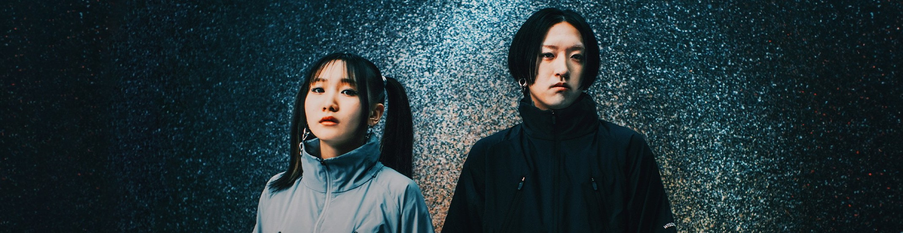

YOASOBI（ヨアソビ）是日本當紅的音樂二人組，
由作曲家 Ayase（本名：齊藤圭一郎）和創作歌手 Ikura（本名：幾田莉拉）組成。
他們自 2019 年以來，透過將小說音樂化的創作方式，迅速在日本及國際間獲得高度關注。

Ayase（齊藤圭一郎）
1994 年出生於日本山口縣，原為搖滾樂團成員，
後轉型為知名的 VOCALOID 製作人，
並以其精緻的音樂製作風格受到矚目。
Ikura（幾田莉拉）
2000 年出生，曾參與不插電音樂團體 Plasonica，
並在社群平台上分享翻唱作品，
吸引了 Ayase 的注意，最終共同組成 YOASOBI。
近期得獎與成就
2025 年 MUSIC AWARDS JAPAN：YOASOBI 以歌曲《偶像》（Idol）入圍 14 項獎項，
為本屆入圍最多的藝人之一。
2023 年 MTV 日本音樂錄影帶大獎（VMAJ）：獲得年度最佳藝人獎。
Vogue Taiwan 2024 年 Crunchyroll Anime Awards：以《偶像》獲得最佳動畫歌曲獎。